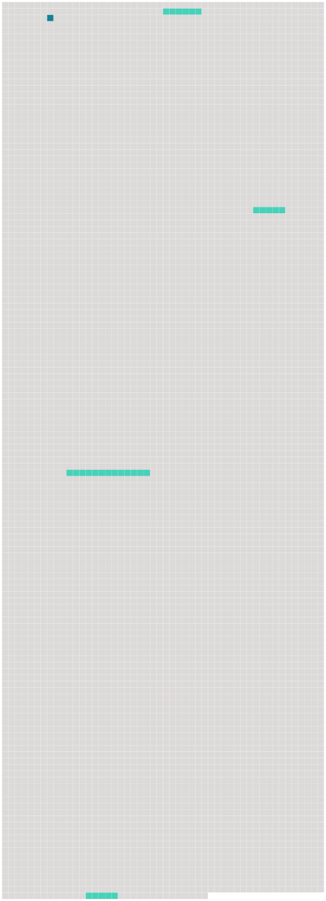

Longueur nb maillons : 5 mentions |
|
En poussant le vantail mobile de la porte, qui ne cédait pas sans protester et tournait avec une évidente mauvaise humeur sur ses gonds oxydés et criards, on se trouvait sous une espèce de voûte ogivale plus ancienne que le reste du logis, et divisée par quatre boudins de granit bleuâtre se rencontrant à leur point d'intersection à une pierre en saillie où se revoyaient, un peu moins dégradées, [les armoiries sculptées à l'extérieur] , trois cigognes d'or sur champ d'azur, ou quelque chose d'analogue, car l'ombre de la voûte ne permettait pas de [les] bien distinguer. [36 phrases] Toutes portaient à leur angle [le blason de la famille] et l'âge du personnage représenté ; mais, que le chiffre fût bas ou élevé, il n'existait pas une différence bien appréciable entre ces têtes aux lumières jaunes, aux ombres carbonisées, enfumées de vernis et saupoudrées de poussière ; deux ou trois de ces toiles chancies et couvertes d'une fleur de moisissure présentaient des tons de cadavre en décomposition, et prouvaient, de la part du dernier descendant de ces hommes de race et d'épée, une indifférence complète à l'endroit des effigies de ses nobles aïeux. [45 phrases]
Ce chat tout seul, dans cette cuisine, semblait faire la soupe pour lui -même, et c'était sans doute lui qui avait disposé sur la table de chêne une assiette à bouquets verts et rouges, un gobelet d'étain, fourbi sans doute avec ses griffes tant il était rayé, et un pot de grès sur les flancs duquel se dessinaient grossièrement, en traits bleus, [les armoiries du porche, de la clef de voûte et des portraits] [79 phrases] Sigognac prit sur la table un petit volume dont la reliure ternie portait estampé [l'écusson de sa famille] , et se mit à en tourner les feuilles d'un doigt nonchalant. |
 |
Il est possible de télécharger la ressource sur la page Ortolang |
Si vous avez des questions ou vous voyez des erreurs, merci d'envoyer un mail à silvia.federzoni89@gmail.com |